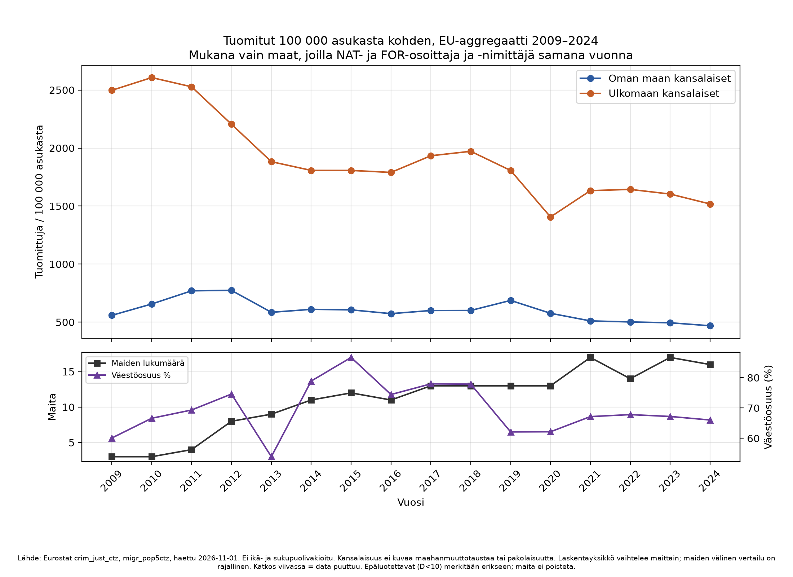
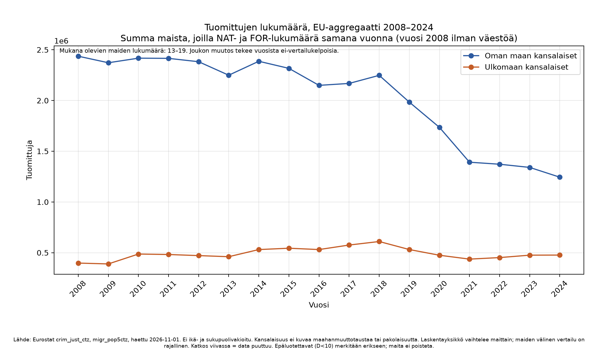
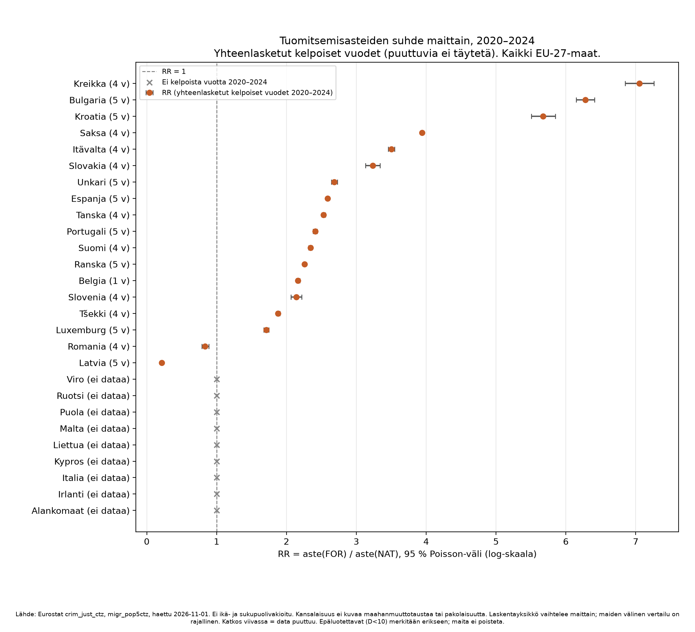
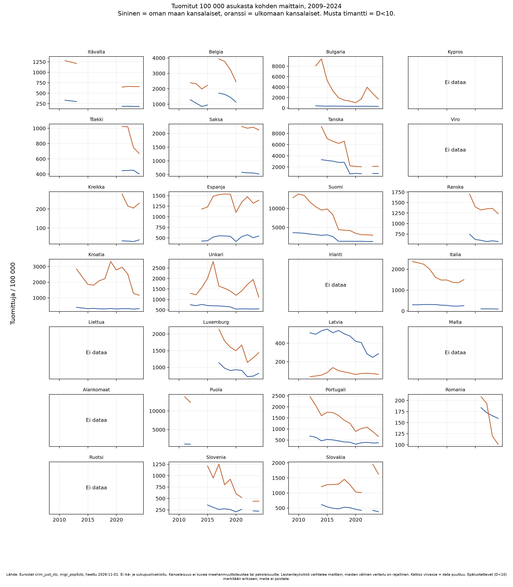
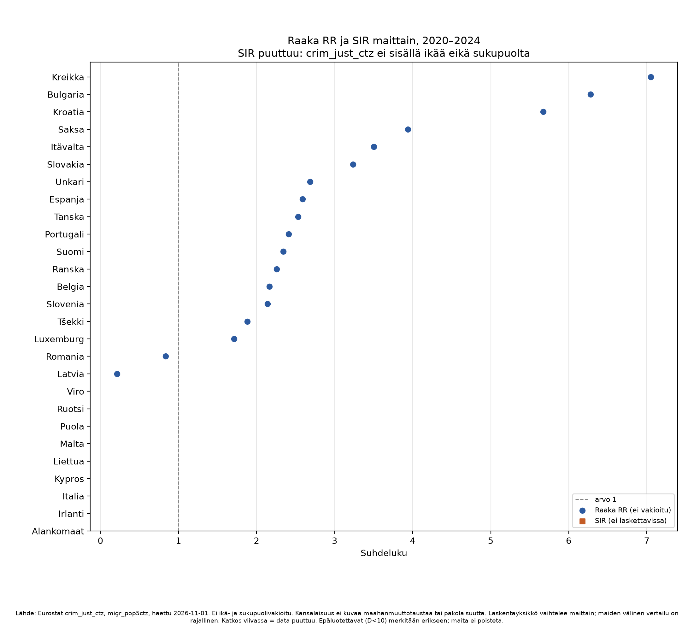
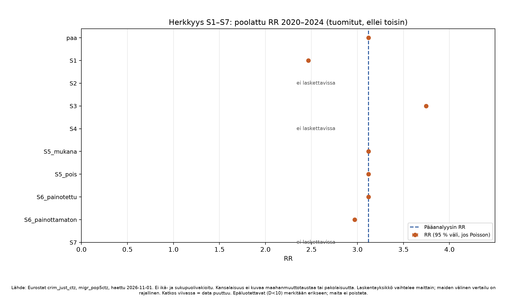
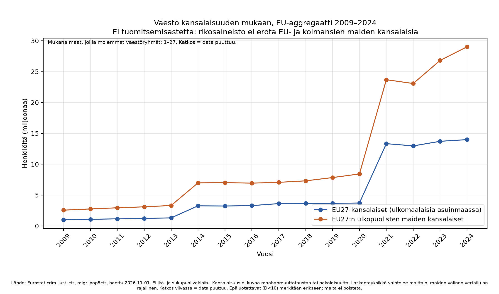
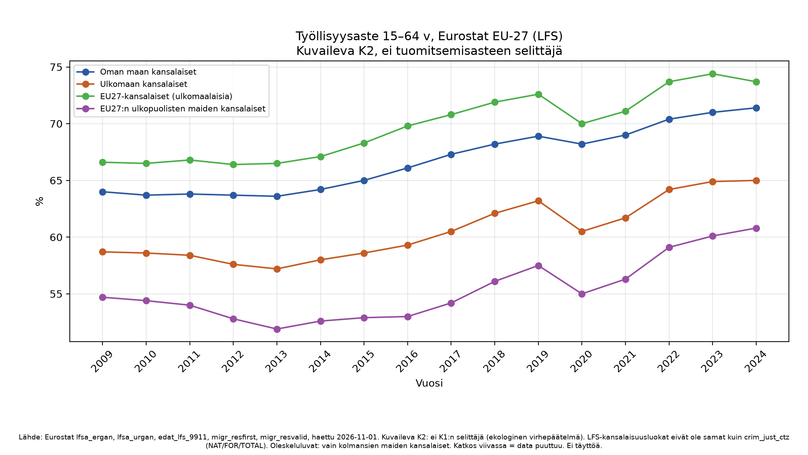

Raportti: tuomitut kansalaisuuden mukaan, EU-27, 2008–2024
Esirekisteröinti: PREREGISTRATION.md (2026-11-01).
Aineisto: Eurostat crim_just_ctz, migr_pop5ctz (haettu 2026-11-01).
Kaikki luvut ovat taulukoista output/tables/; puuttuva = NaN, ei täyttöä.
Tämä tulososio ei sisällä tulkintaa. Tulkinta on osiossa 8.
1. Aineisto ja kelpoisuus (K1)
- Osoittaja:
crim_just_ctz,leg_stat=PER_CNV,unit=NR,citizen∈ {NAT, FOR, TOTAL}. Sarakkeitaagejasexei ole. - Nimittäjä:
migr_pop5ctz,c_birth=TOTAL,sex=T,unit=NR,citizen∈ {NAT, FOR} (UNK ja STLS erillään). - Absoluuttiset määrät: 2008–2024. Asteet: 2009–2024.
- Maa–vuosi on kelpoinen asteeseen, jos NAT- ja FOR-tuomitut sekä molemmat väestöt ovat olemassa ja väestö > 0.
Coverage (coverage_matrix.csv): 459 riviä (27 maata × 17 vuotta). Kelpoisia asteeseen: 177 (20 maata, 2009–2024). Vuonna 2008 kelpoisia asteeseen: 0.
D<10 (FOR-tuomitut) kelpoisissa riveissä: 0. Yksi merkitty D<10-rivi (ES 2009, FOR=0) ei ole kelpoinen asteeseen (väestö puuttuu).
2. Tulosmuuttujat
| Muuttuja | Määritelmä |
|---|---|
| Aste | tuomitut / väestö × 100 000 |
| RR | aste(FOR) / aste(NAT) |
| 95 % väli (RR) | \(\ln(RR)\pm 1{,}96\sqrt{1/D_{FOR}+1/D_{NAT}}\) |
| Asteiden väli | Garwood (chi²) |
| SIR | epäsuora ikä×sukupuolivakiointi |
Esirekisteröity ehto: eroa pidetään tilastollisesti havaittavana, jos RR:n 95 % väli ei sisällä arvoa 1.
3. EU-aggregaatti (tuomitut)
Summa vain maista, joilla molemmat ryhmät samana vuonna. Ei virallinen EU-27-sarja. Lähde: eu_aggregaatti.csv.

| Vuosi | Maita (aste) | Väestöosuus | Aste NAT | Aste FOR | RR |
|---|---|---|---|---|---|
| 2009 | 3 | 0,60 | 558 | 2497 | 4,47 |
| 2010 | 3 | 0,67 | 656 | 2607 | 3,97 |
| 2011 | 4 | 0,69 | 770 | 2528 | 3,28 |
| 2012 | 8 | 0,75 | 774 | 2206 | 2,85 |
| 2013 | 9 | 0,54 | 585 | 1882 | 3,22 |
| 2014 | 11 | 0,79 | 610 | 1807 | 2,96 |
| 2015 | 12 | 0,87 | 606 | 1807 | 2,98 |
| 2016 | 11 | 0,74 | 573 | 1790 | 3,12 |
| 2017 | 13 | 0,78 | 600 | 1934 | 3,22 |
| 2018 | 13 | 0,78 | 601 | 1972 | 3,28 |
| 2019 | 13 | 0,62 | 687 | 1807 | 2,63 |
| 2020 | 13 | 0,62 | 576 | 1406 | 2,44 |
| 2021 | 17 | 0,67 | 511 | 1633 | 3,20 |
| 2022 | 14 | 0,68 | 502 | 1644 | 3,28 |
| 2023 | 17 | 0,67 | 494 | 1604 | 3,24 |
| 2024 | 16 | 0,66 | 469 | 1518 | 3,24 |
Absoluuttiset tuomitut (maat, joilla NAT- ja FOR-lukumäärä)

. Mukana 13–19 maata vuodessa. Vuonna 2024: NAT 1 244 139, FOR 476 401 (16 maata).
4. Maittain, yhteenlasketut kelpoiset vuodet 2020–2024
Poolaus: summa osoittajista ja nimittäjistä kelpoisilta vuosilta (puuttuvia vuosia ei täytetä). Lähde: rr_2020_2024.csv.

Kaikki 27 EU-maata (järjestys RR:n mukaan; ei dataa viimeisenä)
| Maa | n vuotta | Aste NAT | Aste FOR | RR | 95 % väli | Väli sisältää 1 |
|---|---|---|---|---|---|---|
| Kreikka | 4 | 33,0 | 232,6 | 7,05 | 6,85–7,26 | ei |
| Bulgaria | 5 | 329,0 | 2065,5 | 6,28 | 6,15–6,41 | ei |
| Kroatia | 5 | 297,8 | 1690,0 | 5,67 | 5,51–5,85 | ei |
| Saksa | 4 | 558,5 | 2200,8 | 3,94 | 3,93–3,95 | ei |
| Itävalta | 4 | 187,8 | 657,8 | 3,50 | 3,46–3,55 | ei |
| Slovakia | 4 | 420,7 | 1360,7 | 3,23 | 3,13–3,34 | ei |
| Unkari | 5 | 549,3 | 1474,3 | 2,68 | 2,64–2,73 | ei |
| Espanja | 5 | 514,8 | 1332,4 | 2,59 | 2,58–2,60 | ei |
| Tanska | 4 | 828,0 | 2095,9 | 2,53 | 2,51–2,56 | ei |
| Portugali | 5 | 364,4 | 878,7 | 2,41 | 2,38–2,44 | ei |
| Suomi | 4 | 1337,4 | 3133,2 | 2,34 | 2,32–2,37 | ei |
| Ranska | 5 | 589,6 | 1330,7 | 2,26 | 2,25–2,27 | ei |
| Belgia | 1 | 1137,8 | 2463,9 | 2,17 | 2,14–2,19 | ei |
| Slovenia | 4 | 231,0 | 494,5 | 2,14 | 2,06–2,22 | ei |
| Tšekki | 4 | 437,2 | 821,9 | 1,88 | 1,85–1,91 | ei |
| Luxemburg | 5 | 822,0 | 1406,4 | 1,71 | 1,67–1,75 | ei |
| Romania | 4 | 170,4 | 142,5 | 0,84 | 0,79–0,89 | ei |
| Latvia | 5 | 329,0 | 69,9 | 0,21 | 0,20–0,23 | ei |
| Kypros | 0 | — | — | — | — | ei laskettu |
| Viro | 0 | — | — | — | — | ei laskettu |
| Irlanti | 0 | — | — | — | — | ei laskettu |
| Italia | 0 | — | — | — | — | ei laskettu |
| Liettua | 0 | — | — | — | — | ei laskettu |
| Malta | 0 | — | — | — | — | ei laskettu |
| Alankomaat | 0 | — | — | — | — | ei laskettu |
| Puola | 0 | — | — | — | — | ei laskettu |
| Ruotsi | 0 | — | — | — | — | ei laskettu |
Pääanalyysin poolattu RR (18 maata, 77 maa–vuotta): 3,120 (3,116–3,125). Aste NAT 504,8; aste FOR 1575,2 per 100 000.
Vuosirivit 2009–2024 (asteet.csv): 177 kelpoista; RR-väli sisältää 1 yhdellä rivillä (RO 2022: 1,12; 1,00–1,26). epaluotettava (D<10) kelpoisissa: 0.

5. SIR (ikä × sukupuoli)
sir_rajoite.csv: ehto age ja sex crim_just_ctz:ssä = False.
Kaikki 27 maata: SIR = NaN, SIR-väli = NaN, \((RR-SIR)/RR\) = NaN.

migr_pop1ctz sisältää ikä×sukupuoli×kansalaisuus -väestön. Osoittajaa ei ole jaettu ikäryhmiin.
6. Herkkyysanalyysit S1–S7
Metrinen: poolattu RR 2020–2024, ellei toisin. Lähde: herkkyys_S1_S7.csv.

| Analyysi | n maita | n maa–vuotta | RR | 95 % väli |
|---|---|---|---|---|
| paa | 18 | 77 | 3,120 | 3,116–3,125 |
| S1 täysi 2020–2024 | 8 | 40 | 2,465 | 2,459–2,471 |
| S2 EU vs. kolmas maa | — | — | ei laskettu | — |
| S3 epäillyt | 20 | 92 | 3,746 | 3,743–3,749 |
| S4 laskentayksikkö henkilö | — | — | ei laskettu | — |
| S5 D<10 mukana | 18 | 77 | 3,120 | sama kuin paa |
| S5 D<10 pois | 18 | 77 | 3,120 | sama kuin paa |
| S6 painotettu | 18 | 77 | 3,120 | sama kuin paa |
| S6 painottamaton | 18 | — | 2,969 | ei Poisson-CI |
| S7 naturalisaatio | — | — | ei laskettu | — |
S1-maat: BG, ES, FR, HR, HU, LU, LV, PT.
S2: citizen = FOR, NAT, TOTAL.
S4: unit = NR, P_HTHAB.
S7: ei naturalisaatiota rikosaineistossa.
S3: epäillyt (PER_SUSP), ei sama henkilöjoukko kuin tuomituissa.
7. EU-sisäiset vs. kolmansien maiden kansalaiset (väestö)
K1-asteita tälle jaolle ei ole (eu_vs_kolmas_rajoite.csv).
Väestö (migr_pop5ctz, citizen = EU27_2020_FOR / NEU27_2020_FOR, c_birth=TOTAL, sex=T): kelpoinen jako 163 / 432 maa–vuotta. Aggregaatissa maita 1–27 vuodessa (2021, 2023, 2024: 27).

. RR_EU_vs_NEU = NaN.
8. Tulkinta ja rajat
Mitä data tukee
- Niissä EU-27:n maa–vuosissa, joissa NAT- ja FOR-tuomitut ja vastaavat väestöt ovat saatavilla, kirjattujen tuomioiden aste per 100 000 asukasta ei ole sama NAT- ja FOR-ryhmille (esirekisteröity kriteeri: 95 % väli ei sisällä 1). Tämä koskee 176 / 177 kelpoista vuosiriviä ja 18 / 18 maata, joille 2020–2024-poolaus on laskettu.
- RR on yli 1 16 maassa ja alle 1 kahdessa (Latvia 0,21; Romania 0,84); molemmissa suunnissa väli ei sisällä 1.
- Yhdeksällä maalla ei ole yhtään kelpoista vuotta 2020–2024. Ne on raportoitu, ei poistettu.
- Kattavuus ja maiden joukko vaihtelevat vuodesta toiseen (3–17 maata asteissa). EU-viiva ei ole vakioinen EU-27-sarja.
- S1 (vain 8 täyden kattavuuden maata) antaa poolatun RR:n 2,47; pääanalyysi 3,12. Painottamaton maa-RR:ien keskiarvo 2,97. Epäiltyjen poolattu RR 3,75. Nämä ovat samoja aineistoja eri rajauksin, eivät erillisiä väitteitä syistä.
Mitä data ei tue
- Syy-yhteyttä kansalaisuuden ja rikosten tekemisen välillä. Aste on kirjattujen tuomioiden ja asukasväestön suhde.
- Väitettä, että luku on yksilön riski tai arvio tehdyistä rikoksista.
- Väitettä maahanmuuttotaustasta, syntymämaasta tai pakolaisuudesta. Muuttuja on kansalaisuus (NAT/FOR).
- Ikä- ja sukupuolivakioitua eroa. SIR = NaN.
- EU-sisäisten vs. kolmansien maiden kansalaisten tuomitsemisasteita. Osoittaja on vain FOR-yhteensä.
- Naturalisaatiokorjausta. NAT sisältää kansalaisuuden saaneet; heitä ei voi siirtää FOR-osoittajaan ilman oletusta.
- Politiikkajohtopäätöstä turvapaikka-, maahanmuutto- tai rikospolitiikasta.
- Sitä, että K2 (työllisyys, koulutus, oleskelulupa) selittää K1:n. Ekologinen virhepäätelmä; LFS-luokat ≠
crim_just_ctz; oleskeluluvat vain kolmansien maiden kansalaisille.
Mikä jää avoimeksi
- Kuinka suuri osa RR:stä liittyy ikään, sukupuoleen, oleskeluaikaan, matkailijoihin osoittajassa, laskentayksikköön (henkilö vs. tapaus) tai ilmoitus- ja syyttäjäkäytäntöön.
- Maat ilman kelpoista nimittäjää tai osoittajaa 2020–2024.
- Ruotsin kansallinen tuomitut × kansalaisuus (Brå CSV puuttuu).
- Tanskan DST-luokat (DANSK / VEST / IKKEVEST) ja Suomen rangaistuskappaleet suhteessa Eurostatin PER_CNV:hen: eri määritelmät, ei yhteismitallisia.
9. K2 (kuvaileva, erillinen)
Ei yhdistetty K1:n selittäjäksi. Lähde: LFS ja oleskeluluvat, haettu 2026-11-01.



Eurostat EU-27, LFS, vuosi 2024 (sex=T)
| NAT | FOR | EU27_2020_FOR | NEU27_2020_FOR | |
|---|---|---|---|---|
| Työllisyysaste 15–64 v, % | 71,4 | 65,0 | 73,7 | 60,8 |
| Työttömyysaste 15–64 v, % | 5,5 | 10,8 | 7,3 | 12,7 |
| ISCED 5–8, 25–64 v, % | 36,6 | 30,6 | 33,3 | 29,3 |
Ensimmäiset oleskeluluvat, EU-27, 2024, osuus TOTAL:sta (vain kolmansien maiden kansalaiset): työ 31,8 %; perhe 27,1 %; muu 25,4 %; koulutus 15,7 %.
10. Kansalliset tapaustutkimukset (ei EU-aggregaatissa)
| Maa | Aineisto | Tulos (lukumäärät, ei Eurostat-RR) |
|---|---|---|
| Tanska | DST STRFNA13, 2018–2025, OVERTRÆD=1 | 2024: DANSK 135 349; VEST 10 548; IKKEVEST 13 423. Ei NAT/FOR. Ei nimittäjää. |
| Suomi | StatFin 15hh | 2024 oikeudessa tuomitut: Suomi 44 251; Ulkomaat yhteensä 5 617. Kaikki seuraamukset (ml. sakot) laskevat 2020–2021; katkosta ei täytetty. |
| Ruotsi | Brå | CSV puuttuu. PDF-lukuja ei kopioitu. |
11. Poikkeamat esirekisteröinnistä
CHANGELOG.md
- Esirekisteröinti ei ole sokko: tutkiva visualisointi (
docs/) ajettiin ennen 2026-11-01. - Forest 2020–2024 käyttää yhteenlaskettuja kelpoisia vuosia, ei vuosittaisten RR:ien keskiarvoa (Poisson-CI lukumäärille).
- SIR, S2, S4 ja S7 on jätetty NaN/rajoitteeksi, koska dimensiot eivät salli laskentaa. Tämä noudattaa protokollaa (ei arvausta), ei ole menetelmän vaihto tuloksen perusteella.
Tutkiva GitHub Pages -visualisointi: merkitty tutkivaksi (maat/, vertailu.html), ei tämän raportin tulososio. Etusivu on tämä raportti.
12. Tiedostot
| Polku | Sisältö |
|---|---|
tables/asteet.csv | 459 maa–vuotta, asteet ja RR |
tables/coverage_matrix.csv | peittävyys |
tables/rr_2020_2024.csv | poolattu 2020–2024 |
tables/eu_aggregaatti.csv | EU-summa |
tables/herkkyys_S1_S7.csv | S1–S7 |
tables/sir_maa.csv | SIR = NaN |
tables/k2_*.csv | K2 |
tables/national/ | DK, FI, SE |
figures/01–09 | kaaviot (200 dpi, suomenkieliset alaviitteet) |
Report: convicted persons by citizenship, EU-27, 2008–2024
Preregistration: PREREGISTRATION.md (2026-11-01).
Data: Eurostat crim_just_ctz, migr_pop5ctz (retrieved 2026-11-01).
All figures come from output/tables/; missing = NaN, no filling.
This results section does not include interpretation. Interpretation is in section 8.
1. Data and eligibility (K1)
- Numerator:
crim_just_ctz,leg_stat=PER_CNV,unit=NR,citizen∈ {NAT, FOR, TOTAL}. There are noageorsexcolumns. - Denominator:
migr_pop5ctz,c_birth=TOTAL,sex=T,unit=NR,citizen∈ {NAT, FOR} (UNK and STLS kept separate). - Absolute counts: 2008–2024. Rates: 2009–2024.
- A country–year is eligible for a rate if NAT and FOR convicted counts and both populations exist and population > 0.
Coverage (coverage_matrix.csv): 459 rows (27 countries × 17 years). Eligible for a rate: 177 (20 countries, 2009–2024). Eligible in 2008: 0.
D<10 (FOR convicted) among eligible rows: 0. One flagged D<10 row (ES 2009, FOR=0) is not eligible for a rate (population missing).
2. Outcome variables
| Variable | Definition |
|---|---|
| Rate | convicted / population × 100 000 |
| RR | rate(FOR) / rate(NAT) |
| 95 % interval (RR) | \(\ln(RR)\pm 1{,}96\sqrt{1/D_{FOR}+1/D_{NAT}}\) |
| Interval for rates | Garwood (chi²) |
| SIR | indirect age×sex standardisation |
Preregistered rule: a difference is treated as statistically detectable if the 95 % interval for RR does not contain 1.
3. EU aggregate (convicted)
Sum only of countries with both groups in the same year. Not an official EU-27 series. Source: eu_aggregaatti.csv. Chart
| Year | Countries (rate) | Population share | Rate NAT | Rate FOR | RR |
|---|---|---|---|---|---|
| 2009 | 3 | 0,60 | 558 | 2497 | 4,47 |
| 2010 | 3 | 0,67 | 656 | 2607 | 3,97 |
| 2011 | 4 | 0,69 | 770 | 2528 | 3,28 |
| 2012 | 8 | 0,75 | 774 | 2206 | 2,85 |
| 2013 | 9 | 0,54 | 585 | 1882 | 3,22 |
| 2014 | 11 | 0,79 | 610 | 1807 | 2,96 |
| 2015 | 12 | 0,87 | 606 | 1807 | 2,98 |
| 2016 | 11 | 0,74 | 573 | 1790 | 3,12 |
| 2017 | 13 | 0,78 | 600 | 1934 | 3,22 |
| 2018 | 13 | 0,78 | 601 | 1972 | 3,28 |
| 2019 | 13 | 0,62 | 687 | 1807 | 2,63 |
| 2020 | 13 | 0,62 | 576 | 1406 | 2,44 |
| 2021 | 17 | 0,67 | 511 | 1633 | 3,20 |
| 2022 | 14 | 0,68 | 502 | 1644 | 3,28 |
| 2023 | 17 | 0,67 | 494 | 1604 | 3,24 |
| 2024 | 16 | 0,66 | 469 | 1518 | 3,24 |
Absolute convicted counts (countries with NAT and FOR counts)
. 13–19 countries per year. In 2024: NAT 1 244 139, FOR 476 401 (16 countries).
4. By country, pooled eligible years 2020–2024
Pooling: sum of numerators and denominators over eligible years (missing years are not filled). Source: rr_2020_2024.csv. Chart
All 27 EU countries (ordered by RR; no data last)
| Country | n years | Rate NAT | Rate FOR | RR | 95 % interval | Interval contains 1 |
|---|---|---|---|---|---|---|
| Greece | 4 | 33,0 | 232,6 | 7,05 | 6,85–7,26 | no |
| Bulgaria | 5 | 329,0 | 2065,5 | 6,28 | 6,15–6,41 | no |
| Croatia | 5 | 297,8 | 1690,0 | 5,67 | 5,51–5,85 | no |
| Germany | 4 | 558,5 | 2200,8 | 3,94 | 3,93–3,95 | no |
| Austria | 4 | 187,8 | 657,8 | 3,50 | 3,46–3,55 | no |
| Slovakia | 4 | 420,7 | 1360,7 | 3,23 | 3,13–3,34 | no |
| Hungary | 5 | 549,3 | 1474,3 | 2,68 | 2,64–2,73 | no |
| Spain | 5 | 514,8 | 1332,4 | 2,59 | 2,58–2,60 | no |
| Denmark | 4 | 828,0 | 2095,9 | 2,53 | 2,51–2,56 | no |
| Portugal | 5 | 364,4 | 878,7 | 2,41 | 2,38–2,44 | no |
| Finland | 4 | 1337,4 | 3133,2 | 2,34 | 2,32–2,37 | no |
| France | 5 | 589,6 | 1330,7 | 2,26 | 2,25–2,27 | no |
| Belgium | 1 | 1137,8 | 2463,9 | 2,17 | 2,14–2,19 | no |
| Slovenia | 4 | 231,0 | 494,5 | 2,14 | 2,06–2,22 | no |
| Czechia | 4 | 437,2 | 821,9 | 1,88 | 1,85–1,91 | no |
| Luxembourg | 5 | 822,0 | 1406,4 | 1,71 | 1,67–1,75 | no |
| Romania | 4 | 170,4 | 142,5 | 0,84 | 0,79–0,89 | no |
| Latvia | 5 | 329,0 | 69,9 | 0,21 | 0,20–0,23 | no |
| Cyprus | 0 | — | — | — | — | not calculated |
| Estonia | 0 | — | — | — | — | not calculated |
| Ireland | 0 | — | — | — | — | not calculated |
| Italy | 0 | — | — | — | — | not calculated |
| Lithuania | 0 | — | — | — | — | not calculated |
| Malta | 0 | — | — | — | — | not calculated |
| Netherlands | 0 | — | — | — | — | not calculated |
| Poland | 0 | — | — | — | — | not calculated |
| Sweden | 0 | — | — | — | — | not calculated |
Pooled RR in the main analysis (18 countries, 77 country–years): 3,120 (3,116–3,125). Rate NAT 504,8; rate FOR 1575,2 per 100 000.
Year rows 2009–2024 (asteet.csv): 177 eligible; RR interval contains 1 on one row (RO 2022: 1,12; 1,00–1,26). epaluotettava (D<10) among eligible: 0.
5. SIR (age × sex)
sir_rajoite.csv: condition age and sex in crim_just_ctz = False.
All 27 countries: SIR = NaN, SIR interval = NaN, \((RR-SIR)/RR\) = NaN. Chart
migr_pop1ctz has age×sex×citizenship population. The numerator is not split by age group.
6. Sensitivity analyses S1–S7
Metric: pooled RR 2020–2024 unless noted. Source: herkkyys_S1_S7.csv. Chart
| Analysis | n countries | n country–years | RR | 95 % interval |
|---|---|---|---|---|
| paa | 18 | 77 | 3,120 | 3,116–3,125 |
| S1 full 2020–2024 | 8 | 40 | 2,465 | 2,459–2,471 |
| S2 EU vs third country | — | — | not calculated | — |
| S3 suspected | 20 | 92 | 3,746 | 3,743–3,749 |
| S4 counting unit person | — | — | not calculated | — |
| S5 D<10 included | 18 | 77 | 3,120 | same as paa |
| S5 D<10 excluded | 18 | 77 | 3,120 | same as paa |
| S6 weighted | 18 | 77 | 3,120 | same as paa |
| S6 unweighted | 18 | — | 2,969 | no Poisson CI |
| S7 naturalisation | — | — | not calculated | — |
S1 countries: BG, ES, FR, HR, HU, LU, LV, PT.
S2: citizen = FOR, NAT, TOTAL.
S4: unit = NR, P_HTHAB.
S7: no naturalisation in the crime dataset.
S3: suspected persons (PER_SUSP), not the same set of persons as convicted.
7. EU vs third-country nationals (population)
No K1 rates for this split (eu_vs_kolmas_rajoite.csv).
Population (migr_pop5ctz, citizen = EU27_2020_FOR / NEU27_2020_FOR, c_birth=TOTAL, sex=T): eligible split 163 / 432 country–years. Aggregate has 1–27 countries per year (2021, 2023, 2024: 27). Chart
. RR_EU_vs_NEU = NaN.
8. Interpretation and limits
What the data support
- In those EU-27 country–years where NAT and FOR convicted counts and matching populations are available, the rate of recorded convictions per 100 000 residents is not the same for NAT and FOR (preregistered criterion: 95 % interval does not contain 1). This holds for 176 / 177 eligible year rows and 18 / 18 countries with a 2020–2024 pool.
- RR is above 1 in 16 countries and below 1 in two (Latvia 0,21; Romania 0,84); in both directions the interval does not contain 1.
- Nine countries have no eligible year in 2020–2024. They are reported, not dropped.
- Coverage and the set of countries change from year to year (3–17 countries in rates). The EU line is not a fixed EU-27 series.
- S1 (only 8 countries with full coverage) gives pooled RR 2,47; main analysis 3,12. Unweighted mean of country RRs 2,97. Pooled RR for suspected persons 3,75. These are the same datasets under different restrictions, not separate claims about causes.
What the data do not support
- A causal link between citizenship and committing offences. The rate is recorded convictions divided by resident population.
- A claim that the figure is an individual risk or an estimate of offences committed.
- A claim about migrant background, country of birth, or refugee status. The variable is citizenship (NAT/FOR).
- An age- and sex-standardised difference. SIR = NaN.
- Conviction rates for EU vs third-country nationals. The numerator is FOR in total only.
- A naturalisation correction. NAT includes people who acquired citizenship; they cannot be moved to the FOR numerator without an assumption.
- A policy conclusion on asylum, immigration, or criminal justice policy.
- That K2 (employment, education, residence permit) explains K1. Ecological fallacy; LFS classes ≠
crim_just_ctz; residence permits cover third-country nationals only.
What remains open
- How much of the RR relates to age, sex, length of stay, visitors in the numerator, counting unit (person vs case), or reporting and prosecution practice.
- Countries without an eligible denominator or numerator in 2020–2024.
- Sweden’s national convicted × citizenship (Brå CSV missing).
- Denmark’s DST classes (DANSK / VEST / IKKEVEST) and Finland’s sanction counts versus Eurostat PER_CNV: different definitions, not commensurate.
9. K2 (descriptive, separate)
Not joined as an explanation of K1. Source: LFS and residence permits, retrieved 2026-11-01. Charts
Eurostat EU-27, LFS, year 2024 (sex=T)
| NAT | FOR | EU27_2020_FOR | NEU27_2020_FOR | |
|---|---|---|---|---|
| Employment rate 15–64, % | 71,4 | 65,0 | 73,7 | 60,8 |
| Unemployment rate 15–64, % | 5,5 | 10,8 | 7,3 | 12,7 |
| ISCED 5–8, 25–64, % | 36,6 | 30,6 | 33,3 | 29,3 |
First residence permits, EU-27, 2024, share of TOTAL (third-country nationals only): work 31,8 %; family 27,1 %; other 25,4 %; education 15,7 %.
10. National case studies (not in the EU aggregate)
| Country | Source | Result (counts, not Eurostat RR) |
|---|---|---|
| Denmark | DST STRFNA13, 2018–2025, OVERTRÆD=1 | 2024: DANSK 135 349; VEST 10 548; IKKEVEST 13 423. Not NAT/FOR. No denominator. |
| Finland | StatFin 15hh | 2024 convicted in court: Finland 44 251; foreign total 5 617. All sanctions (incl. fines) fall in 2020–2021; the break was not filled. |
| Sweden | Brå | CSV missing. PDF figures were not copied. |
11. Deviations from preregistration
CHANGELOG.md
- Preregistration is not blind: the exploratory visualisation (
docs/) was run before 2026-11-01. - The 2020–2024 forest uses summed eligible years, not the mean of yearly RRs (Poisson CI is defined on counts).
- SIR, S2, S4 and S7 are left as NaN/constraint because the dimensions do not allow calculation. This follows the protocol (no guessing); it is not a method change after seeing results.
The exploratory GitHub Pages visualisation is marked exploratory (maat/, vertailu.html) and is not this report’s results section. The home page is this report.
12. Files
| Path | Content |
|---|---|
tables/asteet.csv | 459 country–years, rates and RR |
tables/coverage_matrix.csv | coverage |
tables/rr_2020_2024.csv | pooled 2020–2024 |
tables/eu_aggregaatti.csv | EU sum |
tables/herkkyys_S1_S7.csv | S1–S7 |
tables/sir_maa.csv | SIR = NaN |
tables/k2_*.csv | K2 |
tables/national/ | DK, FI, SE |
figures/01–09 | charts (200 dpi, Finnish footnotes) |